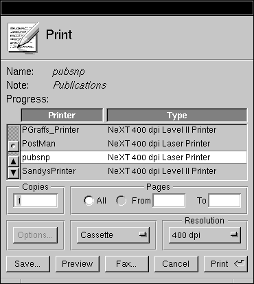

Release 3.3 Copyright ©1995 by NeXT Computer, Inc. All Rights Reserved.
| 7 |
Controls
| Controls are graphical objects that users manipulate with the keyboard and mouse to give instructions to an application. They're patterned after familiar control devices from everyday life--switches, knobs, forms, gauges, and the like--and perform analogous functions. Like the dials and levers on a machine, graphical control objects let the user "operate" an application.
Every control responds visually to direct manipulation by the user--a dial turns, a button pushes in or highlights, the knob of a slider slides. Controls go beyond this direct response, however, to cause the application to do something. They, in effect, translate the user's direct manipulation into an instruction for the application. A button sets a state or initiates a program action, a slider sets a value, and so on. Which keyboard and mouse actions a control responds to and how it reacts visually are part of the definition of the control; they're discussed in this chapter. What the control causes an application to do is part of the definition of the application; it depends solely on how the application uses the control. In this respect, graphical controls are no different from control devices in the real world. For example, identical mass-produced switches can be installed on a variety of different machines. The manufacturer of the switch provides it with a user interface; the installer gives it specific meaning for a specific machine. The NEXTSTEP user interface has several standard controls: |
| Buttons | ||
| Menu commands | ||
| Text fields | ||
| Sliders | ||
| Color wells | ||
| Scrollers | ||
| Browsers and selection lists |
| Because they're widely used, each of these controls is described in some detail in its own section. Menu commands were described in Chapter 6, "Menus." The other controls are described in the sections below.
You can also design your own controls--the Application Kit makes this relatively easy--but they should adhere to these basic design principles: |
| Every control must provide immediate feedback to let the user know that an action has "taken." Just as users can look at a dial on a stove to see whether it has been turned, a graphical control must alter its appearance in response to user actions. It shouldn't depend on a reaction elsewhere in the application to give the user feedback. | ||
| Every control should have a distinctive appearance and behavior. Don't design controls that look so similar to the canonical controls that users will confuse one with the other. | ||
| The behavior of a control should be apparent from its appearance. After a bit of familiarity with NEXTSTEP, users should be able to easily recognize a control object and know almost instinctively how to operate it. |
| Buttons |
| Buttons are the primary controls for setting a state or initiating an application action. They're used for the controls in title bars (the miniaturize and close buttons), for Cancel and the other choices that dismiss attention panels, and in most other situations where a basic control device is called for.
Buttons can assume a variety of different shapes and sizes, some of them standard. The figure below shows the standard types of buttons. |
| How Buttons Work
The Application Kit provides two basic kinds of buttons: one-state (or action) buttons and two-state buttons. Action buttons perform a single task, such as scrolling a document forward or starting a search. A two-state button sets a single characteristic on or off, such as whether to restrict a search to whole words. Standard two-state buttons include switches and radio buttons. Some buttons also bring up lists, as described in the following section. All buttons respond to a click. Some also respond to being pressed. A button that responds to being pressed sends an instruction to the application as soon as the user pushes the mouse button down. Typically, it repeats the instruction at regular intervals--as long as the mouse button is held down and the cursor is kept over the button on-screen--for a continuous, iterative action. Users can drag away from the button and back again to stop and restart the action. A button that responds only to being clicked sends its instruction to the application when the user releases the mouse button, provided the cursor is over the button on-screen. Whether it responds to being clicked or to being pressed, a button changes its appearance as soon as the mouse button goes down. It retains its altered appearance while it's under the cursor and the mouse button remains down. When the user releases the mouse button, the button on-screen keeps its altered appearance long enough for its instruction to be carried out. Usually this is momentary (though it need not be), so users generally notice the button changing as soon as the click is over.
Buttons that Bring Up Lists The Application Kit has support for two kinds of button-list combinations: pop-up lists and pull-down lists. A pop-up or pull-down list is a window that comes to the screen when the user presses a button. The user can drag through the list to choose an option or action. The list stays on-screen only as long as the user keeps the mouse button down. Although pop-up lists and pull-down lists look similar, they have very different roles in the user interface.
Pop-Up Lists Pop-up lists are used in lieu of a series of radio buttons. They save screen space and prevent overcrowding in panels. Each list is controlled by a button that can be recognized by a special symbol , as shown below. The label on the button that precedes the symbol indicates the current selection from the list. When the user makes a new selection, the button label changes. |
 |
| Pressing the button pops the list up so that the item matching the button label appears on top of the button. The list remains up only while the user holds the mouse button down. When the user releases the mouse button after dragging to a different item in the list, the label on the button changes to that item.
Pull-Down Lists Pull-down lists are similar to pop-up lists, but they're used to perform actions, rather than to set a state. In this respect, pull-down lists are somewhat like menus. Visually, pull-down lists differ from pop-up lists in that the controlling button's label never changes, and it's marked by a different symbol . |
| Implementing Buttons
When implementing any kind of button, you must make the following decisions: |
| The end result of clicking the button | ||
| The image or label (or both) on the button | ||
| How the button's appearance changes during a click |
| Of course, before using a button, you should be sure that it's the best control for the job. "Choosing the Appropriate Control," at the end of this chapter, discusses which controls can be used for which types of functionality.
Choosing the Button's Result A one-state (action) button shouldn't change the action it performs. Although it's sometimes tempting to alter the action with the application's state--to switch between Erase and Restore, for example--it's best to provide a different button for each action and disable those that aren't operable. This lets the user safely click in the accustomed place without having to consider which state the application is in. However, it's acceptable for buttons that perform time-consuming actions to have a stop state, as described in "Implementing Stop Buttons," later in this chapter. One-state buttons are generally labeled with a verb or verb phrase (such as Find), but occasionally they have only a graphic image (such as the arrowhead in a scroll bar button). Labeling conventions are discussed in "Choosing the Button's Image or Label," below. Two-state buttons should never perform actions, although the characteristic they affect might result in some visible change. For example, an inspector for a graph might have a set of radio buttons that control the graph's type (line, bar, and so on). Clicking one of the buttons resets the graph's type, which in turn results in the graph being redrawn. However, it wouldn't be acceptable for the radio button to, for example, create a second graph of the new type. Ideally, as soon as the user clicks a two-state button, the visible consequences (if any) should be shown immediately. However, that's not always practical, as when changing the characteristic takes a long time or isn't easy to reverse. For example, if changing the type of a graph takes a long time, then the application might wait for the user to click a Redraw Graph button before redrawing the graph. However, whether or not a two-state button's associated characteristic changes immediately, the button's appearance always changes immediately, as described in "Changing the Button's Appearance during a Click," later in this chapter. Buttons with more than two states aren't recommended: It's very difficult to convey their result to the user.
Choosing the Button's Image or Label A button's label should say, in a succinct shorthand, what action it causes the application to take. Even when a button purports to label a state (such as AM or PM), users are apt to think of it not as the current state, but as the state that will be set if the button is clicked. In other words, they're liable to interpret it as an action. An On button, for example, is more likely to be interpreted to mean "Press this to turn something on" than "This is now on." It's best, therefore, to use images and highlighting to show the current state, and reserve the button's label as a brief statement of what the button does. Buttons that do label a state, such as a button that switches between AM and PM, should be used only where what they label is clearly visible. For example, AM/PM buttons can be used alongside a digital representation of the time, but they can't stand alone. These and other two-state buttons are shown in the figure in the following section. Note: Make sure that the button clearly looks like either an action button or a two-state button. It's confusing to the user to see a two-state button that doesn't clearly have two states, or an action button that doesn't look like it performs an action. You should always dim the label of a button (using gray text) whenever pushing the button will have no effect. A dimmed button is completely disabled--pushing it shouldn't cause it to highlight, push in, or change in any other way. Button labels should be capitalized like menu commands: The first and last words begin with uppercase letters and the words between are capitalized as they would be in a title. Like menu commands, buttons that always bring up a panel (unless it's a warning panel) should have three dots (...) at the end of the label. When an action button can be chosen using the Return key, the button should contain the Return symbol to the right of its label, as shown below at the left. However, when pressing Return won't choose the button--for example, when the button's window isn't the key window--the Return symbol should disappear from the button (as shown at the right, below). Removing the Return symbol helps avoid user confusion over whether pressing Return will work. |
|
|
| Programming Note: Making the Return Symbol Disappear
All Application Kit panels automatically remove the Return symbol when the panel isn't the key window. Attention panels created with NXRunAlertPanel() and its related functions also remove the Return symbol automatically. For other panels, you need to explicitly remove and add the Return symbol for the appropriate button. You can do so in your implementation of the windowDidResignKey: and windowDidBecomeKey: delegate methods of the Window class. |
| Changing the Button's Appearance during a Click
A button's appearance during a click (or while it's pressed) should change in one of the following ways: |
| It can highlight. | ||
| It can both highlight and appear to be pushed in. | ||
| It can change the image it displays. |
| Note: Highlighting can be done either automatically by the Application Kit or by changing the image to a custom, "highlighted" image.
Buttons normally both push in and highlight. However, for aesthetic reasons, buttons that are right next to each other (such as scroll buttons and graphical radio buttons) shouldn't push in. This is because buttons that have no space around their bezeled edges look less three-dimensional than normal. Note: Although it's possible to have a button only push in (without highlighting), this isn't recommended because it's hard to see. The recommended changes for action (one-state) buttons are illustrated in the following figure. The scroll button in the bottom row doesn't push in, since it's very small and is right up against another scroll button. |
| The possibilities for two-state buttons are illustrated in the following figure. |
| Note: In the figure showing two-state buttons, the button in the bottom row is a graphical radio button. It doesn't push in because it's right next to the other radio buttons in its group (although they aren't shown in this figure).
The figure of two-state buttons also illustrates some of the principles that determine how a button looks during a click: |
| A button must change its appearance during a click, as soon as the mouse button goes down. | ||
| The appearance of a button during a click should reflect what's about to happen. Buttons that display a state should reflect the new state both during and after the click. |
| Implementing Pop-Up and Pull-Down Lists
You must provide a title for each pop-up list. Usually this is done by putting a titled box around the pop-up list's button. The figure below shows a typical example, using a box with the title Units. |
|
| Because the label on a pull-down list's button doesn't change, pull-down lists don't need a titled box around them.
When using a pop-up or pull-down list, be careful that the open list doesn't blend in with the objects near it. If an item in the list pops up next to a label, for example, users might interpret them in combination. Take care, too, that the open list doesn't obscure any objects that help users understand its content. |
| Programming Note: Lists that Bring Up Attention Panels
When an item in a pop-up or pull-down list opens an attention panel, the list by default stays up until the panel is dismissed. Because lists are in a higher window tier than attention panels, they can obscure attention panels. To avoid this, you should dismiss the list before bringing up the attention panel. One way of doing this is to have the list item call the perform:with:afterDelay:cancelPrevious: method to schedule the execution of a method 1 millisecond in the future. This method should then bring up the attention panel. |
| Implementing Link Buttons
Link buttons are different from most buttons because they're usually created by the user, instead of built into the application. Because link buttons often appear in custom content areas--areas that can be unique to each application that implements link buttons--link buttons require a little more support from the application than do other kinds of buttons. When implementing link buttons, you should be careful that they act in the following way: |
| Clicking a link button highlights it briefly and brings up the document containing the information that the link refers to. An unmodified click should never select the link button. | ||
| Shift-clicking a link button selects it. | ||
| If the user presses the mouse button while the cursor is over the link button and then drags away without releasing the mouse button, the button should lose its highlight. However, if the user then drags back over the link button while still keeping the mouse button down, the link button should become highlighted again. |
| Implementing Stop Buttons
If an action might take a while, then the user should be able to cancel it by holding the Command key while pressing the period (.) key (as described in Chapter 3, "User Actions: The Keyboard and Mouse"). In addition, sometimes it's convenient for buttons that perform a time-consuming action to have a stop state, to make it more obvious to users that they can interrupt the action. If you implement a button with a stop state, the button's appearance should change as shown below. |
| The button's action should be started when the user completes the first click (by releasing the mouse button). Similarly, the button's action should be stopped when the user finishes clicking the stop button. |
| Text Fields |
| A text field is a slot where the user can type in a single line of data--such as a file name, a part number, or an address. The text is editable and selectable. The data is entered only when the user types Return or clicks a button that's associated with the field. If the user enters more text than will fit in the field, the entry automatically scrolls so that the insertion point stays visible.
A text field should have a white background and be surrounded by a bezeled border that makes it appear inset from the surface of the screen. When the text field is temporarily disabled, the text becomes gray (just like the label of a button), but the background color doesn't change. If a text field is not usually edited or selected but can be--as is, for example, the name associated with a file icon in the Workspace Manager File Viewer--the text should have a gray background with no bezeled border. When the user selects the text, the text field's background should turn white, and the selected text's background should be light gray. Text fields can be titled and arranged in groups to produce an on-screen form, such as the one illustrated below. |
| When there's more than one text field in a window, the Tab key can move the selection--the point where typing will appear--from one field to another: |
| Tab | Moves from one text field to the next one in the series. For example, in the form illustrated above, Tab would cause the current selection to jump from the Name field to the Street field to the City field, and so on. | |
| Shift-Tab | Moves from one text field to the previous one in the series. |
| When the user presses the Return key after typing in a text field, the field usually makes something happen. Data might be entered and processed, a search might begin for text that matches the string in the field, or a document might be saved to a file name the user typed. Exactly what happens is up to the application.
To let users know what to expect, it's recommended that you include a button in the display to act as the equivalent of Return. The button's label is an explicit reminder of what Return will do. From the user's point of view, Return is simply a shortcut for the action of the button. The Print panel below has an example of using a button for the Return key's action. The user can start printing the document either by pressing the Print button or by pressing Return while editing any of the three text fields. If the user presses Return, the Print button pushes in and highlights as if it were pressed. |
|  |
| For the user's convenience, if the action associated with Return is repeatable, Return may select all the text in the same field so the user can easily replace it.
When a text field is part of a form, Return might not perform any particular action of its own. Instead, it will do just what Tab does--move the selection to the next field. Action on a button or other control is required to enter data typed into the form. Generally, text fields accept unrestricted data, but sometimes an entry won't be acceptable if it's the wrong data type--if, for example, the user types in a floating-point number when an integer is called for. Typical examples of restricted data include the following: |
| Unsigned or signed integers | ||
| Unsigned or signed floating-point numbers | ||
| Dates |
| If the user's entry isn't acceptable, all of the text in the field should be selected and highlighted. The user can make any necessary corrections and try again. |
| Sliders |
| A slider is a device that sets a value. As illustrated below, it consists of a vertical or horizontal bar and a knob that moves on the bar. |
| The position of the knob in the slider indicates its current value. Users can move the knob, and thus alter the value, by positioning the cursor anywhere over the bar (even the part of the bar that's covered by the knob) and pressing the mouse button. The knob immediately jumps to the location of the cursor. The user can release the mouse button to fix the knob in its new location, or begin dragging the knob along the bar.
A slider can set values on a continuous scale (between some maximum and minimum) or values at discrete intervals. If the latter, the knob jumps to the position of the nearest permitted value when the user releases the mouse button. When the user presses the Alternate key and drags the slider's knob, the slider should set values at precise, discrete increments that are smaller than the usual increment for unmodified dragging. The user should always be able to detect a direct effect of manipulating the slider's knob--this is usually done in a text field or label next to the slider (as shown in the following figure). |
|
|
| Programming Note: Implementing Alternate-Dragging for Sliders
Your application should specify the increment amount to be used for Alternate-dragging. Otherwise, Alternate-dragging has the same effect as unmodified dragging. |
| Color Wells |
| Color wells are controls that let the user choose a color. They're powerful but inherently indirect, so you should use them only when necessary. Color wells let the user choose many colors from the Colors panel simultaneously, one for each possible aspect of an object's color. For example, in the figure above, an object can have two colors--its fill color and the color of its outline.
Note: The Colors panel is an Application Kit panel discussed in Chapter 5, "Panels." The Colors panel is brought up by the Colors command; it also appears whenever the user selects a color well's border. One alternative to using a color well, when the group of acceptable colors is small, is to use graphical radio buttons (as pictured in the "Buttons" section earlier in this chapter). Another alternative, when a wide range of colors is needed, is to use the Colors panel alone. The user can change an object's color by selecting it and then choosing the new color in the Colors panel. You can also use a new, customized control if it's more appropriate in appearance and functionality than a color well. To choose a color for a color well, the user drags a color either from the Colors panel or from another color well. Another way to set the color is to select the border of the color well. The well's color then changes every time a new color is chosen in the Colors panel. Because the user might not realize a border is selected, this scheme can be confusing. You should be careful to deselect the border whenever the user isn't likely to want to change the color. For example, you should make sure that color wells are deselected when their window is miniaturized. When an object is selected, each visible color well should change its color to reflect the object's associated color. For example, if a white box with a red border is selected, then the Fill well shown in the previous figure should contain white, and the Line well should contain red. Once the user changes the color in a well, that change should be reflected in the selected object. For example, dragging a swatch of green from the Colors panel into the Line well should immediately make the outline of the selected box green. Whether or not a color well's border is selected should have no effect on whether the well affects the object that's currently selected. |
| Scrollers |
| Scrollers are used to control what's displayed within a window or panel, or within a rectangular subsection of a window or panel. When the material to be displayed is larger than the opening available to display it, the user must scroll unseen portions into the opening in order to view them. The figure below shows, diagrammatically, a scrollable document, the area available to view it, and the scrollers that can move the opening around on the surface of the document. |
| How Scrollers Work
As illustrated below, a scroller has just three parts, a bar, a knob, and an optional set of scroll buttons. This figure shows a vertical scroller, which scrolls information up and down. A horizontal scroller scrolls from side to side. |
| If the material to be displayed is provided with scrollers, but happens, perhaps temporarily, to fit within the opening, then the knob and scroll buttons disappear, so the scroller looks like a plain gray strip. The strip indicates that the material will be scrollable, should it grow larger than the opening.
The Knob and Bar The bar of a scroller represents the entire scrollable area. The knob represents the part of the area that's visible. The placement of the knob in the bar shows which part is currently visible in the opening. On a vertical scroller, the height of the knob relative to the height of the bar indicates how much of the material, from top to bottom, is visible. On a horizontal scroller, the width of the knob indicates how much of the material is visible from side to side. The knob shrinks as the user adds to the material, and grows as material is deleted. However, the knob never shrinks to be smaller than a square. Users scroll the display by moving the knob in the bar. The knob can be moved in four ways: |
| By dragging it to a new location. The display is adjusted as the knob moves. | ||
| By clicking in the bar (outside the knob). The knob jumps to the location of the click, and the display is adjusted accordingly. If the user doesn't immediately release the mouse button after pressing it, the knob can be dragged to a new location. This permits users, in a single mouse action, to select the general part of a document they want to view (by clicking in the bar) and then to adjust the display (by dragging the knob). | ||
| By clicking or pressing the scroll buttons. The arrows on the scroll buttons point in the direction the knob will move. | ||
| By extending a selection outside the opening where it's displayed. This automatically scrolls unseen portions of the selection into view. |
| The Scroll Buttons
The scroll buttons permit more precise scrolling than direct manipulation of the knob. When clicked, a vertical scroll button scrolls a single line of text. When pressed, it repeatedly scrolls one line after another. Horizontal scroll buttons work in a similar way, scrolling a small fixed amount in a horizontal direction. The two scroll buttons on the same scroller form a related pair. When the user drags from one to the other without releasing the mouse button, each button acts as if it had been pressed. It's not possible to slide from the scroll buttons on one scroller to those on the other scroller, however. When the Alternate key is held down, the scroll buttons scroll one viewful at a time. Generally, when scrolling down a document, the bottom line (or two) is redisplayed at the top of the opening each time the display changes. When scrolling toward the beginning of a document, the top line (or two) is redisplayed at the bottom. This provides users with a bit of overlapping context and reassures them that nothing was skipped over when the display changed. Sometimes scroll buttons appear alone, without the rest of the scroller. Since the knob and bar aren't present to indicate when it's impossible to scroll further in one direction or the other, the arrow on a scroll button must be dimmed when the button won't work. |
| Programming Note: Scrolling
Using Interface Builder, it's easy to put scrollers around an area. The Application Kit handles all scrolling behavior, including Alternate-clicking to scroll a large amount and Alternate-dragging to scroll a tiny amount. All you might want to do is adjust the amount that a click scrolls (even for graphics, it should be a distance comparable to a single line of text) and optimize drawing performance so that scrolling is as fast as possible. |
| Automatic Scrolling
When the user begins a selection in the visible part of a document then drags outside the opening, the document will scroll continuously to bring more of the selection into view, until the user releases the mouse button. The farther the user drags outside the opening, the greater each repeated change in the display. It's as if the application tries repeatedly to bring the point under the cursor into view. As the document scrolls, the scroller knob is adjusted to reflect the current position of the display.
Fine-Tuning Mode If a document is large, small movements of the knob may correspond to sweeping changes in the display. This makes it difficult for users to adjust the display with precision when dragging the knob. To make fine adjustments possible even for large documents, scrollers have a fine-tuning mode. When the user holds down the Alternate key and drags the knob, the knob and display move only slightly in response to large movements of the mouse. In this mode, the knob moves in the direction it's dragged, but doesn't stay with the cursor. It continues to reflect the position of the document being displayed. Once the Alternate key is released, any subsequent dragging action will cause the knob to jump to the position of the cursor.
Implementing Scrollers If the material to be displayed is taller than the opening available to view it, it should have a vertical scroller. If it's wider than the opening, it should have a horizontal scroller. |
| Writing Note: The User's View of Scrolling
By moving the knob in the bar, users metaphorically move an opening around on the surface of a document so that they can see the portions they desire. Visually, of course, it's the document that appears to move, not the opening. This means that the knob and the display move in opposite directions. To avoid confusion, the user interface and the application's documentation should concentrate on the metaphor of adjusting the portion of the document that's visible, rather than adjusting the document to make it visible. |
| The scroll buttons for both vertical and horizontal scrollers should occupy the lower left corner, where the two scrollers meet. Keeping all the scroll buttons in the same region makes it easy for users to move from one set to the other.
Controls that determine how a scrollable document is viewed can be placed within the area normally occupied by the scrollers (beneath and to the left of the document). Other sorts of controls should not be placed within this area. |
| Among the controls that can be placed in the scroller area are these: |
| An editable text field to display the current page number can be located to the far right of the horizontal scroller (as shown above). | ||
| A pop-up list that lets the user scale the display can be located in the area of the horizontal scroller (as shown above). | ||
| A pop-up list used to control the viewing mode for the display (for example, preview versus drawing mode in a graphics application) can be similarly situated to the zoom pop-up list in the area of the vertical scroller. | ||
| Page scroll buttons that scroll from page to page or by viewfuls can be grouped next to the line scroll buttons in the lower left corner where the vertical and horizontal scrollers meet. Since there is no Application Kit support for page scroll buttons, but there might be in the future, a precise arrangement is not currently specified. (Typical page scroll buttons are shown above.) |
| Browsers and Selection Lists |
| Browsers and selection lists are similar--they both let the user select one or more names in a list. A browser shows text data that's organized in a hierarchy, such as: |
| Files and folders | ||
| Cities, counties, and states | ||
| The managerial structure of a company |
| Selection lists look something like a single-level browser. They usually have scrollers, but they don't have to.
See "Selection" in Chapter 3 for information on how users should select items in a browser or scrolling list. In addition to selecting by clicking, a browser or selection list may have an associated text field, which lets the user select by typing. The Save panel, for example, has a text field that helps the user select files in the panel's browser. If double-clicking an item within a selection list or browser does anything, it should perform the same action as pressing the Return key (that is, the same action as the button marked with the Return symbol). |
| Choosing the Appropriate Control |
| For some situations, it's clear what control is appropriate: |
| Scrollers are used only when material is displayed in an area that might be too small. | ||
| Sliders are used when there's a need to graphically set a value that's in a bounded range (of colors, numbers, or sound levels, for example). | ||
| Text fields are used whenever it's impossible or impractical to provide a list of all possible values. | ||
| Color wells are used only with the Colors panel, and only where complex color characteristics are needed. | ||
| Browsers are used only for data that's organized in a hierarchy. |
| Buttons and selection lists are flexible, though. They can be used in many ways. The following sections describe how to decide which type of button to use, and when to use a selection list.
Controls that Start Actions Actions should usually be started by either a menu command or a button. If necessary, you can even duplicate a menu command in a button. Even though text fields can start actions as the result of pressing Return, they should always have a button nearby that appears to be clicked when Return is pressed. Sometimes an action is relatively unimportant, and having a button for it takes up too much screen space. If the action isn't appropriate for a menu command for some reason, then another choice is to make it an item in a pull-down list. The following figure shows how the same action (printing) might appear as a menu command, button, and pull-down list item. (It normally appears as a menu command.) |
| Controls that Show State
Pop-up lists, selection lists, and two-state buttons are used to show state. (Menu commands should never be used to show state.) Sometimes a single control shows the state of a single option. Often, though, options are grouped. Such a group should have either a one-of-many relationship, where exactly one option is always selected, or an unrestricted relationship, where any number of options (or none at all) might be selected. Note: A third relationship is currently possible only in selection lists: a relationship in which either no choice or one choice can be selected. Controls that show state should be used strictly to show and set state, not to initiate actions. For example, although double-clicking an item in a selection list might cause an action to happen, the double-click is really a shortcut for selecting the item and then clicking a button. If setting state has visible consequences, such as causing the format of a document to change, then the consequences should merely be immediate feedback that the state has changed, and not a full action such as creating another document with the new format.
Displaying a Single Option Often options are grouped together. Sometimes, however, a single option stands alone. In this case, a switch is the preferred control. Another possibility is a graphical two-state button, as long as it's very clear that the button has two states. |
| Displaying a Group with an Unrestricted Relationship
To show a group of choices with an unrestricted relationship, as opposed to a one-of-many relationship, you should use one of the following: |
| A group of switches | ||
| A group of graphical two-state buttons that don't look like graphical radio buttons | ||
| A selection list |
| Switches and graphical two-state buttons are preferred, since selection lists are less attractive and don't give clues as to how many selections can be made at once. (If you use two-state buttons, be careful that they don't look like graphical radio buttons.) When space is tight or the list of choices can grow or shrink, a selection list might be more appropriate.
Displaying a Group with a One-of-Many Relationship Several kinds of controls can be used to show a one-of-many relationship--that is, to let the user choose one and only one setting out of a list of possible choices: |
| A group of radio buttons (standard or graphical) | ||
| A pop-up list | ||
| A selection list |
| The figure below shows these controls as if they were being used to set the background color of a text field. Because this use is inherently graphical and there are only a few valid choices, graphical radio buttons are the best choice, followed by standard radio buttons. A pop-up list is marginally acceptable for this use, and a selection list is the least appropriate choice. |
| In general, you should use radio buttons (standard or graphical) for one-of-many relationships unless there's a reason to use another type of control. If radio buttons aren't appropriate, then usually a pop-up list is appropriate. A selection list is the last choice, since it isn't as obvious to the user that exactly one item must be selected at all times.
The following considerations might help you decide which control to use: |
| If the control will be used frequently, consider using radio buttons (standard or graphical), since they're easier to operate and more accessible to the user. | ||
| If text doesn't adequately describe the choices, consider using a group of graphical radio buttons. | ||
| If space is limited or the window or panel looks too complex, consider using a pop-up list. | ||
| If the list of choices can grow or shrink, consider using a pop-up list or a selection list. | ||
| If the list of choices can grow larger than the screen, use a selection list with a scroller. | ||
| If the user needs to see more than one of the choices on-screen to understand them, avoid using a pop-up list. | ||
| If the control will usually appear at the edge of the screen, you might want to avoid a pop-up list. The reason: A pop-up list usually pops up so that the current selection is under the cursor. But if the list is long and near the edge of the screen, it shifts so that the entire list can appear on-screen, which may change the selection under the cursor. Users might therefore unwittingly make a new selection while intending only to see what's in the list. When considering a pop-up list, think about whether it's important to avoid this behavior. | ||
| If many ordinary, text-based buttons are in the panel, a pop-up list might fit in better graphically. |